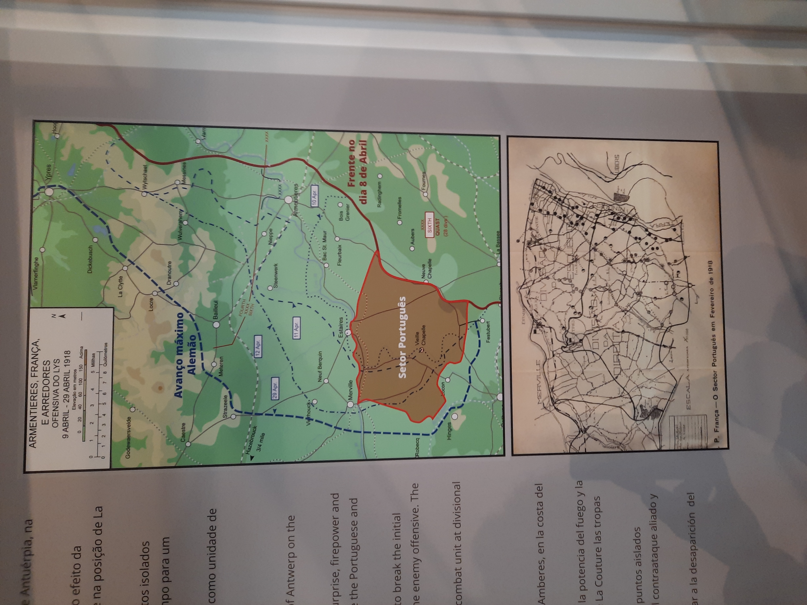
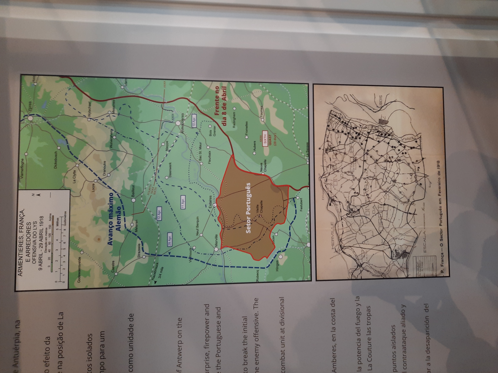

FEITOS HERÓICOS
Durante a batalha de La Lys, a 9 de Abril de 1918, em que a Operação Georgette devastou as depauperadas posições portuguesas, os comandantes deram a ordem de retirada em massa.
Porém, em vez de retirar, Milhais, desobedeceu às ordens sozinho, e correu ao longo das linhas de trincheira do seu sector, para tentar retardar o avanço das tropas alemãs que progrediam em direção às posições portuguesas.
Sendo apontador de metralhadora Ligeira Lewis 7,7 mm, foi fazendo fogo de diferentes posições, iludindo as tropas alemãs, de que ainda haveria tropas da 2ª divisão do C.E.P naquele sector.
Com a força do número, os soldados alemães decidiram contornar aquele ponto das linhas, e deixaram Milhais para a retaguarda, onde, já sem munições para a sua Lewis, logrou sobreviver durante uns dias, com o pouco que lhe restava das magras rações, até encontrar um oficial da Divisão inglesa do sector que o ajudou a voltar ao que restava do Regimento de Infantaria 15.
Ao enfrentar sozinho as colunas alemãs que se atravessaram no seu caminho, permitiu a retirada de vários soldados portugueses e ingleses para as posições defensivas da retaguarda.
Durante esses dias de sobrevivência, depois do feito heróico, encontrou um médico escocês, salvando-o de morrer afogado num pântano. Foi este médico, para sempre agradecido, que deu conta, e validou, ao exército aliado dos feitos do soldado transmontano.
Regressado a um acampamento português, o comandante Ferreira do Amaral saudou-o, dizendo o que ficaria para a História de Portugal, "Tu és Milhais, mas vales Milhões!".
Tinha nascido a Lenda, esta baseada na verdade.
Por este feito, recebeu a mais alta condecoração militar portuguesa - a Ordem Militar de Torre e Espada, do Valor, Lealdade e Mérito - ainda na Flandres em 1918.


 
